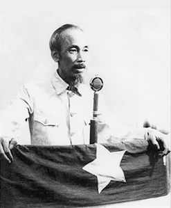

Hỡi đồng bào cả nước,
"Tất cả mọi người đều sinh ra có quyền bình đẳng. Tạo hóa cho họ những quyền không ai có thể xâm phạm được; trong những quyền ấy, có quyền được sống, quyền tự do và quyền mưu cầu hạnh phúc".
Lời bất hủ ấy ở trong bản Tuyên ngôn độc lập năm 1776 của nước Mỹ. Suy rộng ra, câu ấy có ý nghĩa là: tất cả các dân tộc trên thế giới đều sinh ra bình đẳng; dân tộc nào cũng có quyền sống, quyền sung sướng và quyền tự do.
Bản Tuyên ngôn nhân quyền và dân quyền của Cách mạng Pháp năm 1791 cũng nói:
"Người ta sinh ra tự do và bình đẳng về quyền lợi, và phải luôn luôn được tự do và bình đẳng về quyền lợi".

Đó là những lẽ phải không ai chối cãi được.
Thế mà hơn tám mươi năm nay, bọn thực dân Pháp lợi dụng lá cờ tự do, bình đẳng, bác ái, đến cướp đất nước ta, áp bức đồng bào ta. Hành động của chúng trái hẳn với nhân đạo và chính nghĩa.
Về chính trị, chúng tuyệt đối không cho nhân dân ta một chút tự do dân chủ nào.
Chúng thi hành những luật pháp dã man. Chúng lập ba chế độ khác nhau ở Trung, Nam, Bắc để ngăn cản việc thống nhất nước nhà của ta, để ngăn cản dân tộc ta đoàn kết.
Chúng lập ra nhà tù nhiều hơn trường học. Chúng thẳng tay chém giết những người yêu nước thương nòi của ta. Chúng tắm các cuộc khởi nghĩa của ta trong những bể máu.
Chúng ràng buộc dư luận, thi hành chính sách ngu dân.
Chúng dùng thuốc phiện, rượu cồn để làm cho nòi giống ta suy nhược.
Về kinh tế, chúng bóc lột dân ta đến tận xương tủy, khiến cho dân ta nghèo nàn, thiếu thốn, nước ta xơ xác, tiêu điều.
Chúng cướp không ruộng đất, hầm mỏ, nguyên liệu.
Chúng giữ độc quyền in giấy bạc, xuất cảng và nhập cảng.
Chúng đặt ra hàng trăm thứ thuế vô lý, làm cho dân ta, nhất là dân cày và dân buôn, trở nên bần cùng.
Chúng không cho các nhà tư sản ta ngóc đầu lên. Chúng bóc lột công nhân ta một cách vô cùng tàn nhẫn.
Mùa thu năm 1940, phát-xít Nhật đến xâm lăng Đông - Dương để mở thêm căn cứ đánh Đồng minh, thì bọn thực dân Pháp quỳ gối đầu hàng, mở cửa nước ta rước Nhật. Từ đó dân ta chịu hai tầng xiềng xích: Pháp và Nhật. Từ đó dân ta càng cực khổ, nghèo nàn. Kết quả là cuối năm ngoái sang đầu năm nay, từ Quảng trị đến Bắc kỳ hơn hai triệu đồng bào ta bị chết đói.
Ngày 9 tháng 3 năm nay, Nhật tước khí giới của quân đội Pháp. Bọn thực dân Pháp hoặc bỏ chạy hoặc đầu hàng. Thế là chẳng những chúng không "bảo hộ" được ta, trái lại, trong 5 năm, chúng đã bán nước ta hai lần cho Nhật.
Trước ngày mồng 9 tháng 3, biết bao lần Việt minh đã kêu gọi người Pháp liên minh để chống Nhật. Bọn thực dân Pháp đã không đáp ứng, lại thẳng tay khủng bố Việt minh hơn nữa.
Thậm chí đến khi thua chạy, chúng còn nhẫn tâm giết nốt số đông tù chính trị ở Yên Bái và Cao Bằng.
Tuy vậy, đối với nước Pháp, đồng bào ta vẫn giữ một thái độ khoan hồng và nhân đạo. Sau cuộc biến động ngày mồng 9 tháng 3, Việt minh đã giúp cho nhiều người Pháp chạy qua biên thùy, lại cứu cho nhiều người Pháp ra khỏi nhà giam Nhật, và bảo vệ tính mạng và tài sản cho họ.

Sự thật là từ mùa thu năm 1940, nước ta đã thành thuộc địa của Nhật, chứ không phải thuộc địa của Pháp nữa. Khi Nhật hàng Đồng minh thì nhân dân cả nước ta đã nổi dậy giành chính quyền lập nên nước Việt Nam Dân chủ Cộng hòa.
Sự thật là dân ta đã lấy lại nước Việt Nam từ tay Nhật, chứ không phải từ tay Pháp.
Pháp chạy, Nhật hàng, vua Bảo Đại thoái vị. Dân ta đã đánh đổ các xiềng xích thực dân gần một trăm năm nay để gây dựng nên nước Việt Nam độc lập. Dân ta lại đánh đổ chế độ quân chủ mấy mươi thế kỷ mà lập nên chế độ dân chủ cộng hòa.
Bởi thế cho nên, chúng tôi, Lâm thời Chính phủ của nước Việt Nam mới, đại biểu cho toàn dân Việt Nam, tuyên bố thoát ly hẳn quan hệ với Pháp, xóa bỏ hết những hiệp ước mà Pháp đã ký về nước Việt Nam, xóa bỏ tất cả mọi đặc quyền của Pháp trên đất nước Việt Nam.
Toàn dân Việt Nam, trên dưới một lòng, kiên quyết chống lại âm mưu của bọn thực dân Pháp.
Chúng tôi tin rằng các nước Đồng minh đã công nhận những nguyên tắc dân tộc bình đẳng ở các Hội nghị Tê-hê-răng và Cựu-kim-sơn, quyết không thể không công nhận quyền độc lập của dân Việt Nam.
Một dân tộc đã gan góc chống ách nô lệ của Pháp hơn tám mươi năm nay, một dân tộc đã gan góc đứng về phe Đồng minh chống phát-xít mấy năm nay, dân tộc đó phải được tự do ! Dân tộc đó phải được độc lập !
Vì những lẽ trên, chúng tôi, Chính phủ Lâm thời của nước Việt Nam Dân chủ Cộng hòa, trịnh trọng tuyên bố với thế giới rằng:
Nước Việt Nam có quyền hưởng tự do và độc lập, và sự thật đã thành một nước tự do, độc lập. Toàn thể dân tộc Việt Nam quyết đem tất cả tinh thần và lực lượng, tính mạng và của cải để giữ vững quyền tự do, độc lập ấy.
▶ Video Toàn văn Bác Hồ đọc bản tuyên ngôn độc lập